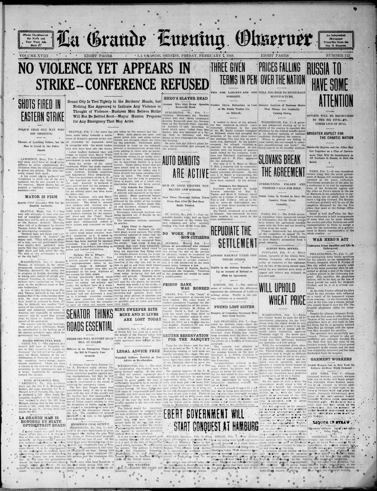
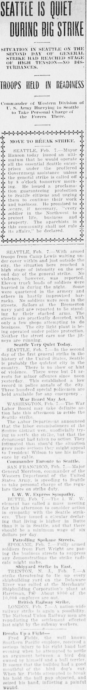
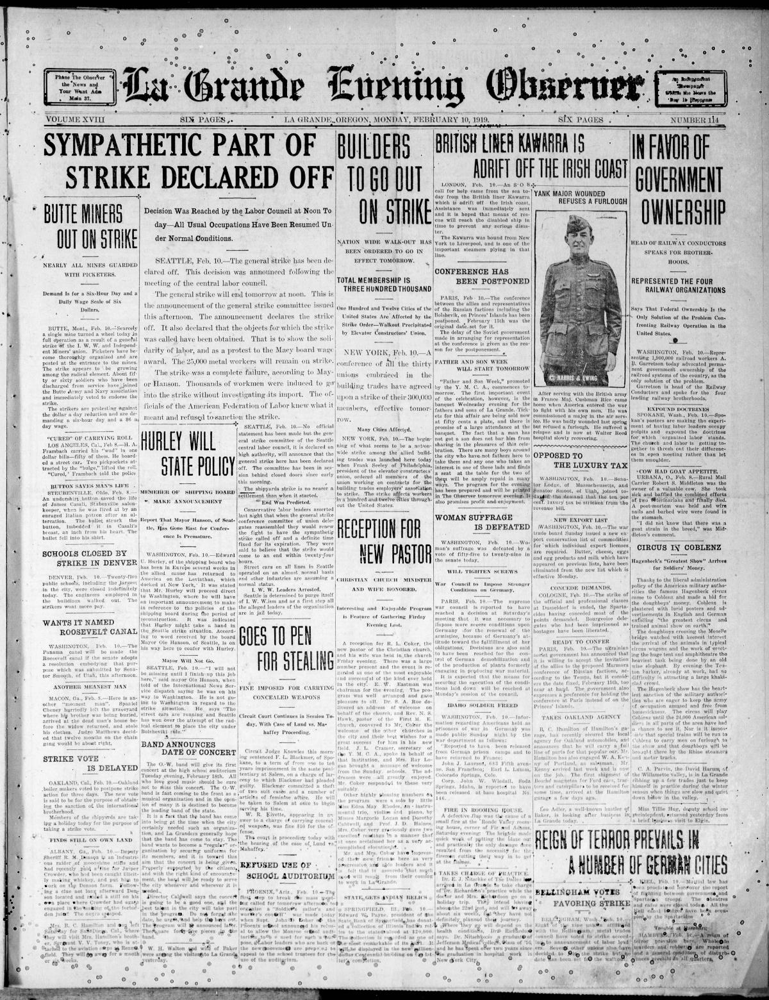
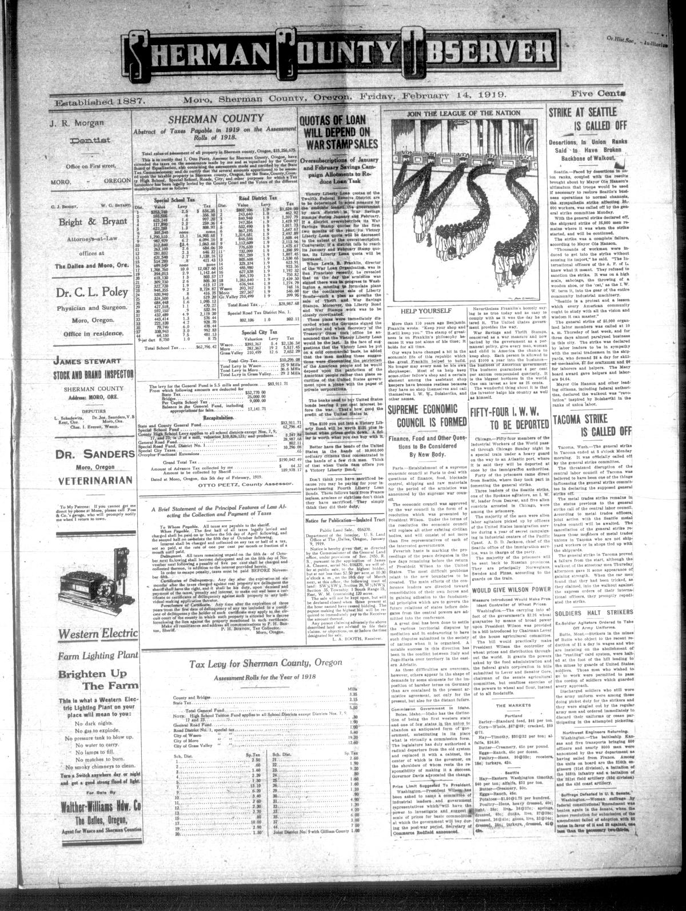

HN HN-414 · February 6, 1919 · Economy, Labor & Industry > Labor Unions, Strikes & Workplace Conflict > Strikes
Source: South Bend News-Times, p. 1 — original page; University of Washington labor-history project.
Report: As shipyard workers sought higher wages, Seattle unions began a citywide sympathy strike. The dispatch described stopped streetcars, curtailed power and other services, while essential functions and some newspaper work continued.
Assessment: The five-day Seattle General Strike involved roughly 60,000 workers, according to the University of Washington's historical project. Contemporary suggestions that it must be an attempted Bolshevik overthrow are political interpretations, not what the existence of a mass labor strike alone proves.
Authentic scans retrieved from Historic Oregon Newspapers (University of Oregon). Article crops are located using the archive's own OCR word coordinates and rendered at native crop resolution; page scans are reduced-size access renditions. No images were generated, mocked, or retouched.




Not yet acquired. Queued for provider-specific acquisition testing (see source-acquisition manifest).
URL (preserved verbatim): https://newspapers.library.in.gov/?a=d&d=SBNT19190206.1.1
Saved research report: Historical_Newspaper_Event_Research_403-427_2026-10-23.md
Evidence note: A newspaper report means a historical publication made a claim; it does not establish that claim as fact. Contemporary reporting is separated from later scholarly context and our own assessment.